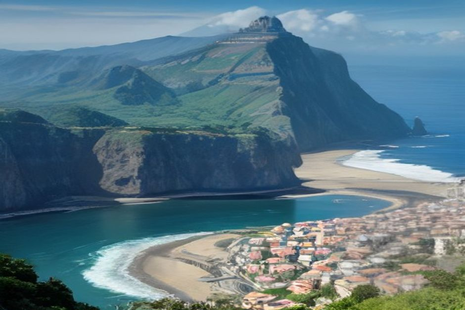

La plupart des visiteurs sous-estiment Madère, la traitant comme une île balnéaire qu'on coche en un long week-end. Ce n'en est pas une — c'est une chaîne de montagnes posée dans l'Atlantique, et la durée de séjour qui convient dépend entièrement de la part de l'île que vous souhaitez réellement découvrir.
Combien de jours faut-il pour visiter Madère ?
Quatre à cinq jours constituent le minimum pratique pour une première visite — assez de temps pour la vieille ville de Funchal, une vraie randonnée en montagne ou sur une levada, et une journée complète en mer. Une semaine, c'est la version confortable : elle ajoute la côte nord, une seconde randonnée, et assez de marge pour absorber une matinée pluvieuse sans perdre une journée entière du séjour. En dessous de trois jours, il faut choisir une région et accepter de découvrir un morceau de l'île, pas l'île entière.

3 jours suffisent-ils pour Madère ?
C'est assez pour un avant-goût, pas pour l'île. Avec trois jours, le plan honnête est une journée à Funchal (Zona Velha, Mercado dos Lavradores, un téléphérique jusqu'à Monte), une journée sur la côte, et une journée en montagne ou sur une levada. C'est sur la journée côtière que le bateau prouve toute son utilité — une seule après-midi en mer permet de couvrir Câmara de Lobos, Cabo Girão et un arrêt baignade qu'il faudrait sinon relier sur terre au prix d'une journée entière de conduite et de stationnement.
À quoi ressemble un bon itinéraire de 5 jours ?
Cinq jours, c'est le format idéal pour la plupart des voyageurs : une journée en douceur autour de Funchal, une journée complète sur la côte sud en bateau, une journée de randonnée (Pico do Arieiro ou une levada comme 25 Fontes), une journée à explorer un village sur terre — Ribeira Brava ou Ponta do Sol — et une journée flexible gardée en réserve pour la météo la plus favorable. Prévoir cette journée flexible compte plus que n'importe quel ordre fixe, car la météo de Madère peut transformer une journée de montagne en journée côtière avec seulement quelques heures de préavis.
Une semaine suffit-elle pour voir toute l'île ?
Une semaine couvre presque tout ce que la plupart des visiteurs recherchent réellement, même si « toute l'île » reste une notion mouvante sur un territoire aussi varié. Sept jours suffisent pour Funchal, la côte sud en bateau, au moins deux journées de randonnée (une en haute montagne, une sur une levada plus basse), une journée complète sur la côte nord plus sauvage autour de Porto Moniz et Seixal, et une excursion au coucher de soleil vers la fin du séjour. Ce qu'une semaine ne permet toujours pas de faire confortablement, c'est tout faire à un rythme tranquille — Madère récompense les voyages lents, et vouloir caser la côte nord, les Îles Desertas et le Pico Ruivo dans la même semaine implique généralement plus de conduite qu'on ne le voudrait.
Faut-il répartir son séjour entre Funchal et une autre base ?
Seulement si vous restez une semaine ou plus. Funchal est suffisamment centrale pour que chaque site majeur — les montagnes, les villages de la côte sud, l'aéroport — se trouve à moins d'une heure de route, ce qui en fait la base la plus efficace pour les séjours plus courts. Pour un séjour de 7 jours ou plus, passer une nuit ou deux à Porto Moniz ou à Santana peut valoir le coup, ne serait-ce que pour éviter le long trajet retour après une journée sur la côte nord ; mais en dessous d'une semaine, la logistique de bagages et de check-out d'une seconde base coûte généralement plus de temps qu'elle n'en fait gagner.
Faut-il louer une voiture pour un itinéraire plus long ?
À partir de cinq jours, oui. La plupart des départs de levadas, le Pico do Arieiro, et l'ensemble de la côte nord ne sont pas réellement accessibles en bus sur un emploi du temps compatible avec de courtes vacances. Pour un séjour de 3 jours entièrement centré sur Funchal et la côte sud, vous pouvez vous en passer — taxis, Bolt et un bateau privé couvrent l'essentiel sans le coût, la franchise d'assurance et le stress des routes de montagne d'une voiture de location.
Quel est le meilleur jour pour réserver une excursion en bateau ?
Tôt dans le séjour, le jour où la météo annonce le plus de calme. Réserver une excursion en bateau privée avec Chifbay dès le premier ou le deuxième jour offre un aperçu de la côte, de Câmara de Lobos à Cabo Girão et au-delà, sans effort et très gratifiant — ce qui facilite ensuite le choix des villages qui méritent un regard plus posé sur terre. Cela laisse aussi une marge de sécurité : si le premier créneau doit être déplacé pour cause de météo, il reste encore des jours pour le recaser avant le retour.
Il n'existe pas de mauvaise durée de séjour à Madère, seulement un décalage possible entre le nombre de jours réservés et la part de l'île que vous espérez voir. Choisissez la région qui vous tient le plus à cœur, construisez l'itinéraire autour d'elle, et gardez le reste pour une prochaine fois — la plupart des gens qui viennent une fois finissent de toute façon par revenir dans les deux ou trois ans.
Questions fréquentes
Combien de jours faut-il pour visiter Madère ?
Quatre à cinq jours constituent le minimum pratique ; une semaine est la version confortable qui ajoute la côte nord et une seconde journée de randonnée.
3 jours suffisent-ils pour Madère ?
C'est jouable mais serré — une journée à Funchal, une sur la côte (idéalement en bateau), et une de randonnée, en acceptant de laisser des choses de côté.
Faut-il louer une voiture à Madère ?
Oui pour les séjours de 5 jours ou plus, car la côte nord et la plupart des départs de sentiers ne sont pas praticables en bus. Pour un court séjour de 3 jours, taxis et transferts suffisent.
Quel est le meilleur jour pour réserver une excursion en bateau ?
Tôt dans le séjour, le jour où la météo annonce le plus de calme, pour garder du temps en cas de report lié à la météo.
Faut-il répartir son séjour entre Funchal et une autre base ?
Seulement pour des séjours d'une semaine ou plus — en dessous, la position centrale de Funchal l'emporte sur la logistique d'une seconde base.